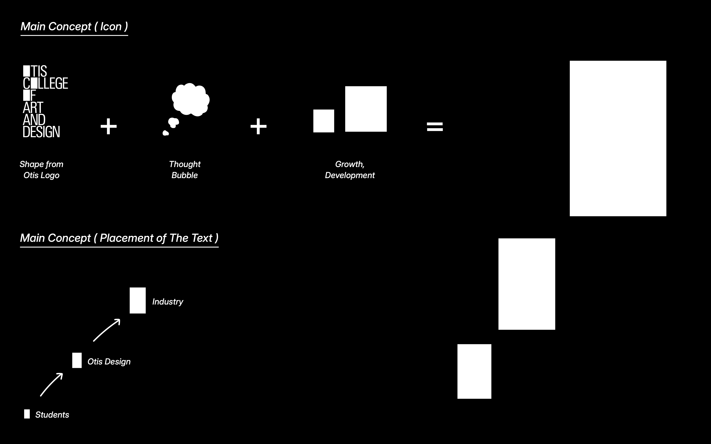
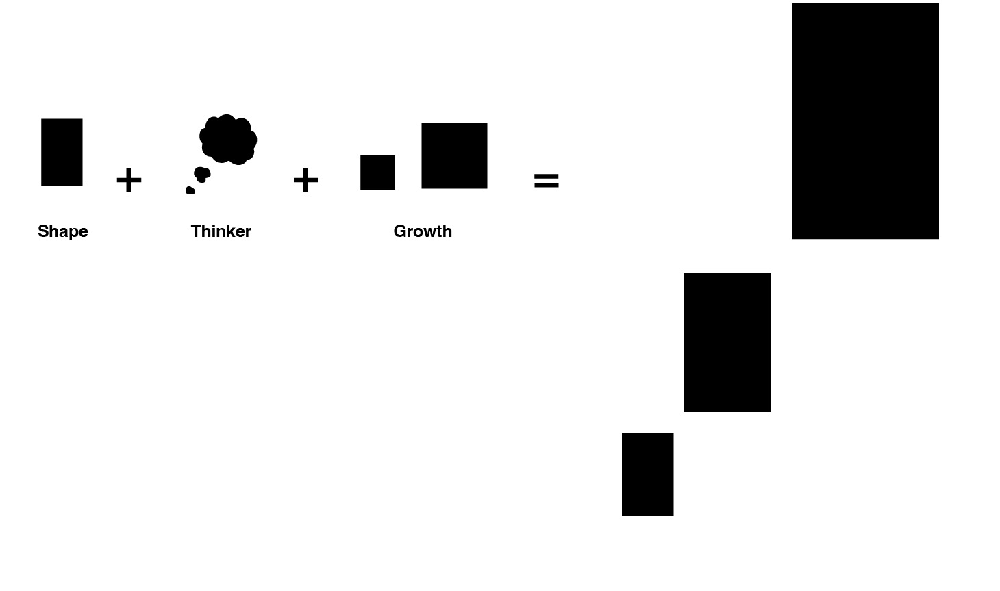
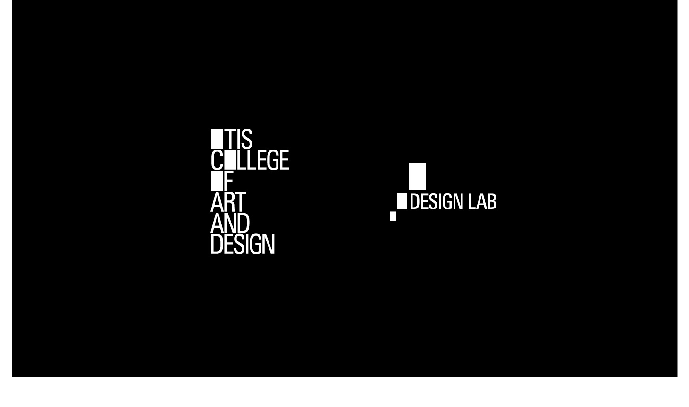
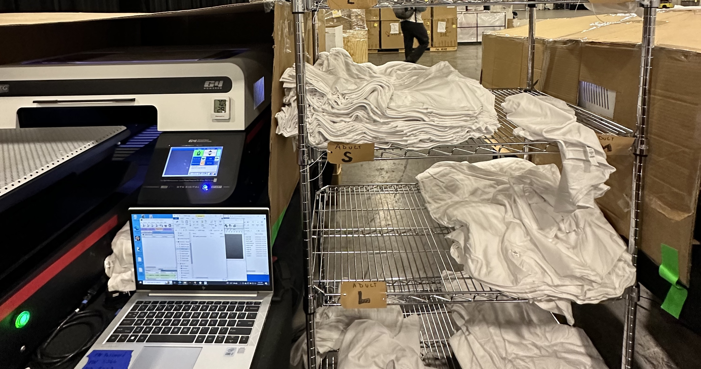

Adobe Max & Summit
Production & Pre-press
Client: Adobe, The Fittest
Delivery: Oct 2023 - Present
At Adobe Max, I supported the on-site print production for Adobe’s AI Generative brand activation. My role involved preparing digital files for different medium of event materials, coordinating with vendors to ensure seamless printing, and overseeing the quality of printed assets. This ensured high-impact visuals that aligned with the event’s theme, delivering a cohesive and engaging experience for attendees while highlighting Adobe’s innovative AI tools.
The Adobe AI Generative booth at Adobe Max featured an immersive brand activation centered around on-site print production. All kinds of visuals, created using Adobe’s AI tools, were produced live, offering attendees an interactive experience. The booth showcased innovative print techniques, with high-quality event materials emphasizing AI’s creative potential.
*history:
1: Adobe Max 2023 Los Angeles
2: Adobe Summit 2024 Las Vegas
3: Smartly ADVANCE (Adobe-Sponsored) New York
4: Adobe Max 2024 Miami (Scheduled, next Oct)




